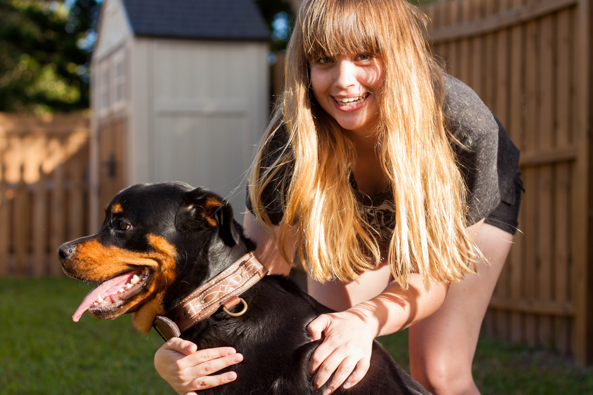

John L. Sitter Bio:
My early adult years were spent traveling the United States and the world, serving in the Marines. In college, after realizing that I did not possess the brains to become a Surgeon, I attended my second boot camp for the U.S. Coast Guard. Upon graduation, I was asked if I would consider a position as a Recruit Physical fitness instructor and I accepted, serving in that role for the majority of my time in that service (No saving lives or busting drug smugglers for me). I met my wife and she and I have been together for 12 years now. She is the best thing that has happened to me, including giving me my daughter (Who is the pride and joy of my life). Together, we live in Lutz, Florida enjoying the local malls and shops in the area. Once in a while we travel to Disney to indulge my wife and daughters need for long lines and heat stroke. I have held various positions of trust in my professional life, between serving as an armed escort for Scientology V.I.P's and companies under threat from recently terminated/hostile employees to working as a telecommunications contractor with the Tampa Police Department. I pride myself on my ability to handle stressful situations, and I enjoy the feeling I get when I know that a business and it's employees can feel safe when I was on duty. I can sympathize with families who have reservations about leaving the care and welfare of a furry member of their family with a total stranger. Our small family includes a shaggy black Shih-Tzu named Zoey. She is the fourth member of our family and goes pretty much everywhere with us. Zoey is just one of the many pets I've owned since I was young, and not counting all of the stray animals me and my brother would bring home, we've owned dogs, cats, gerbils, hamsters, guinea pigs and turtles! I look forward to the opportunity to meet with new families and developing the trust that is required between a family and their sitter.